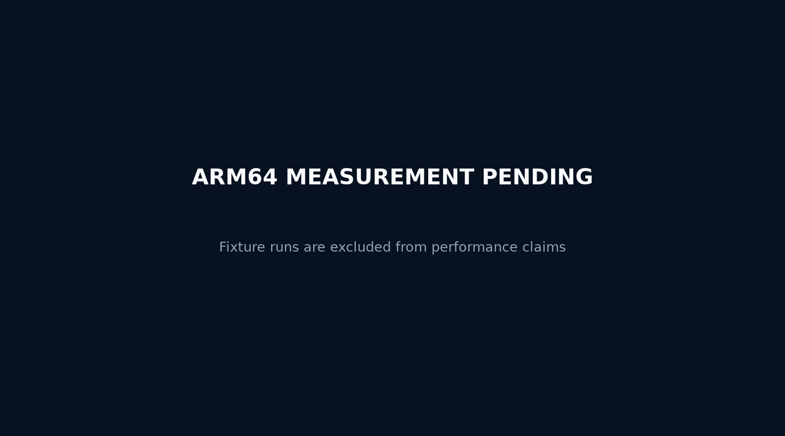
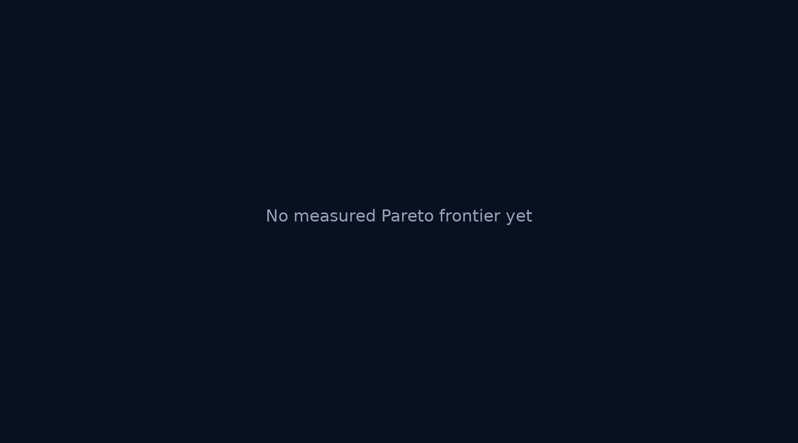

0fabricated benchmark claims
The report fails closed when target evidence is absent.
A bounded tuner, quality gate, OpenAI-compatible endpoint, and claim-level evidence pipeline for agentic inference on Arm64 CPUs.
No performance number is published until the fair generic/KleidiAI run finishes on Arm64 Linux. 0 fixture rows remain excluded.
The report fails closed when target evidence is absent.
The submitted strong-only proxy validates schema, read-only tool policy, safety, and consistency; invalid output fails closed with HTTP 502.
Tuning decisions freeze before final labels are evaluated. A4 routing remains a future experiment unless its gate passes.
| Candidate | Stage | Backend | n | p50 ms | p95 ms | Quality | Safety | Peak RSS |
|---|---|---|---|---|---|---|---|---|
| Awaiting same-machine Arm64 Linux A1/A2 measurements. | ||||||||


The primary Arm claim compares the same Q4_0 model checksum, prompts, sampling, runtime settings, CPU affinity, and machine. The exact pinned strong-model inventory contains 197 Q4_0 tensors and one disclosed Q6_K output.weight; that fallback is allowed only when SHA-256, size, and the full GGUF header inventory match. The primary KleidiAI Q4 marker is required and any additional or different fallback is rejected. The intended change is only the generic versus KleidiAI backend. Every claim cites raw run IDs and an explicit formula; fixture output can never support a claim.